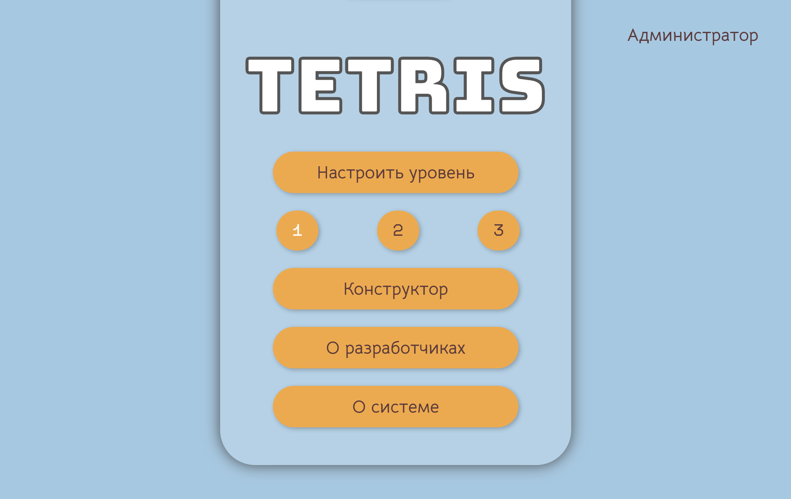
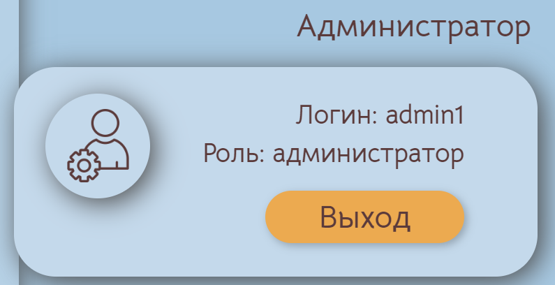
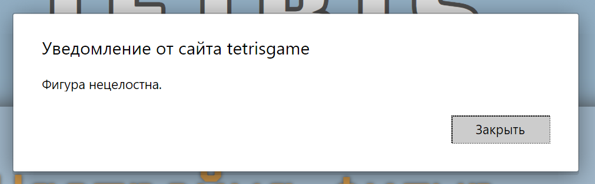
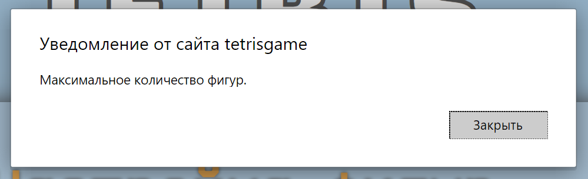

Веб-приложение «Игра «Тетрис» с функциями администратора реализует классические правила игры «Тетрис» с разделением ролей на администратора и игрока.
Цель игры – набрать наибольшее количество очков или времени.
Разработанное приложение требовует наличие операционной системы Windows 10 и выше и браузер Google Chrome 117 и выше.
НаверхСтартовой страницей веб-приложения является страница авторизации пользователя.

По ссылке «Зарегистрироваться» открывается страница регистрации.
 Наверх
Наверх
После успешной авторизации/регистрации в системе осуществляется переход на стартовую страницу «Меню»
По нажатию на кнопку «Администратор» открывается всплывающее окно с информацией о администраторе (логин, роль). В окне присутствует кнопка «Выход», которая переводит пользователя на страницу авторизации.
 НаверхДля перехода на страницу настроек необходимо выбрать уровень (по умолчанию первый) и нажать «Настроить уровень».
На данной странице можно настроить:
Настройки фигур на уровень сохраняются сразу, а остальные настройки сохраняются по нажатию на кнопку «Завершить». Переключение между фигурами осуществляется с помощью стрелок.
Набор фигур текущего уровня переходит на следующие, и фигуры из этого набора нельзя удалить со следующих уровней. Для успешного добавления фигуры на уровень, фигура должна отсутствовать на данном уровне.
Ограничение размерности стакана: ширина от 11 до 18 клеток, высота от 10 до 20 клеток.
Скорость падения задаётся в клетках в секунду. Ограничение скорости падения фигур: от 1 до 8 кл/с.
Ограничение количества рядов: от 1 до 15 рядов.
Ограничение количества начисляемых очков за линию: от 100 до 10000 очков.
НаверхПо нажатию на кнопку «Конструктор» открывается страница конструктора фигур, где осуществляется изменение, добавление, удаление всех фигур. Слева представлены добавленные фигуры, переключение между которыми осуществляется с помощью стрелок.
Справа представлен конструктор фигур, который является полем 4х4 клетки. Фигура заполняется нажатием на клетку. Повторное нажатие очищает клетку.
Конструктор фигур можно очистить, нажав на кнопку «Сбросить»
Критерии для успешного добавления фигуры:
Если фигура не соответствует критериям, выводится всплывающее окно об ошибке.
Также всплывающее окно выводится при попытке удаления фигуры, когда их количество равно 3 (минимальное количество всех фигур).Аналогично при попытке добавления фигуры, когда количество равно 18. Для удобства количество фигур выводится в отдельное поле.
 Наверх